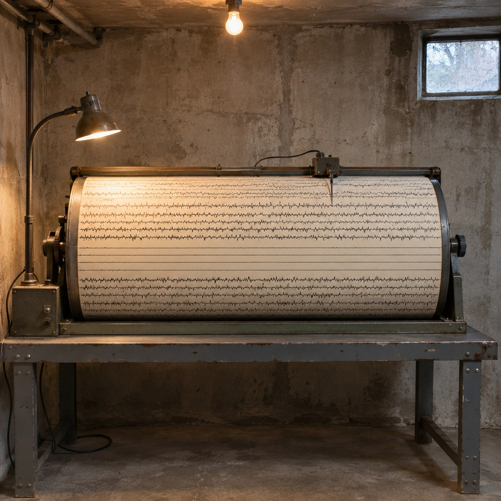
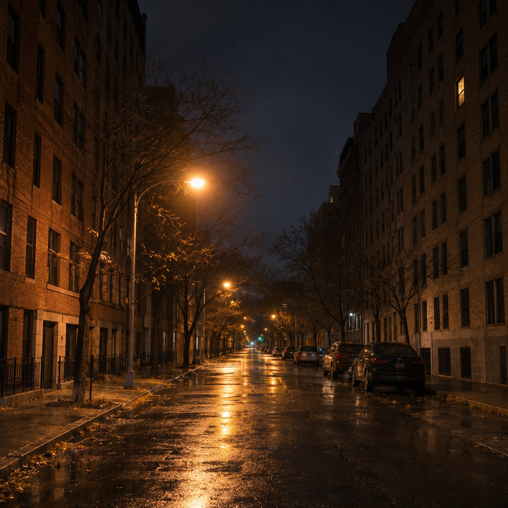

Everyone Lying Still


Under the city, in a basement, a needle rests on a slowly turning drum of paper. It was put there to wait for earthquakes. Most nights none comes, and still the line it draws is never straight. All night it trembles with something smaller: buses, trains, doors, feet on stairs, a few million people going about their lives. The ground carries all of it, and the needle cannot tell one from another.
So this is a portrait of everyone in the city, and no one is in it. At midnight the line is thick and nervous. After one it thins. At a quarter to four it goes nearly flat, as close to still as a city gets. A little after five the first trains pull it back into a shiver.
Nobody planned that flat stretch, and nobody saw it happen. It is the one moment in the day when the most people at once were doing nothing, and it took a machine to notice, because to a person stillness is not an event.
Douglas Huebler set out to photograph everyone alive, knowing he would fail, and the few pictures he took showed how little any record can hold. This record holds everyone and shows nothing about any of them. On Kawara sent telegrams for thirty years that said only that he was still alive. The trace says the same for a whole city, in a hand no one can read as words.
I care most about the flat part. Even there the needle never stops. The quietest a city can be is still not quiet. Somewhere a pipe, a fridge, one person who could not sleep.